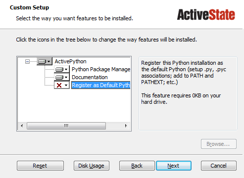

Getting Started Running Scripts¶
Overview of Steps¶
To get MontyLacuna working, you’ll have to follow a few steps. These are similar to the steps necessary to setting up the standard Lacuna scripts written in Perl, but these steps should be simpler.
- Install Python 3
- Install MontyLacuna
- Install Python libraries
- Create a config file
Install Python 3¶
Windows¶
You can download Python 3 from ActiveState’s website. Make sure you download version 3.whatever, not version 2.whatever.
During installation, the installer will show you what features will be installed, in a window that looks like this:

In some cases, that Register as Default Python will be unselected, as indicated by the red X. We want that turned on. Click on the little down arrow just to the right of the red X, and set this feature to be installed. When you’re done, the window should look like this:
From here on, just click the Next button until the installer completes.
After the installer is complete, open up a CMD window and type:
python --version
That should respond with something like this:
Python 3.4.0
If that’s what you see, then Python has been installed successfully.
Non-Windows¶
If you’re on Linux or Mac, you probably already have Python installed. But make sure that you’ve got Python 3. Many systems come with Python 2, not 3, and MontyLacuna will not work with Python 2. Python 3 should be available via your package manager.
Install MontyLacuna¶
Download your preferred filetype. For most people, that will be the “zip” file.
Type Link Zip Download zip file Tar Download tar file
- Open the zip file using whatever unzip tool you like. It contains just
one folder, named something like tmtowtdi-MontyLacuna-1234abc. Drag
that out to My Documents on your computer.
- On Windows, you don’t need to go download an unzip tool. Just double-click on the .zip file after you’ve downloaded it, and Windows will open it up just like it’s a regular folder.
- After dragging that oddly-named folder into My Documents, rename it to just MontyLacuna.
Install pip and Prerequisite Libraries¶
pip is a tool for installing Python libraries. Installing pip is very easy, as MontyLacuna includes a script to install it for you.
Open up a terminal window (on Windows, this means CMD.exe) to the MontyLacuna folder you just extracted in the previous step, and run the pip installer script:
python bin/get-pip.py
pip is now installed.
There are only two Python libraries to install, requests and beaker, and you install both of them using pip by typing these two commands one at a time:
pip install requests
pip install beaker
- Ruh-Roh! Pip didn’t work!
If you ran one of the pip install commands above, and it told you something like:
Unknown or unsupported command 'install'
...here’s what happened. You probably have Strawberry Perl installed, and Strawberry Perl has, for some bizarre reason, a completely different program named ‘pip’, and that’s what you’re running right now.
The fix is easy enough. Instead of just typing pip, you need to type the full path to your Python pip program. So do this:
c:\Python34\Scripts\pip install requests c:\Python34\Scripts\pip install beaker
Leave that CMD window open for the next step.
Create A Config File¶
Using the CMD window you left open from the previous step, run the config file creation script:
python bin/create_config_file.py
That will ask you several questions, and then create your config file for you.
Ready to Test¶
At this point, you should be set to run any of the available scripts in the bin/ directory. There’s a test script that will show you a few details about your empire, and requires no arguments. Try it out by typing:
python bin/test_script.py
If that tells you “Congratulations”, you’re all set.